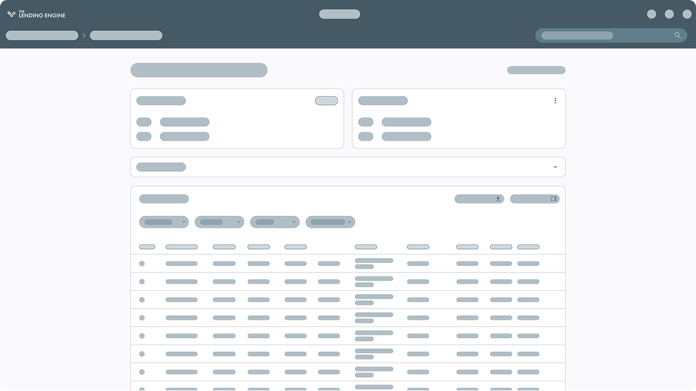
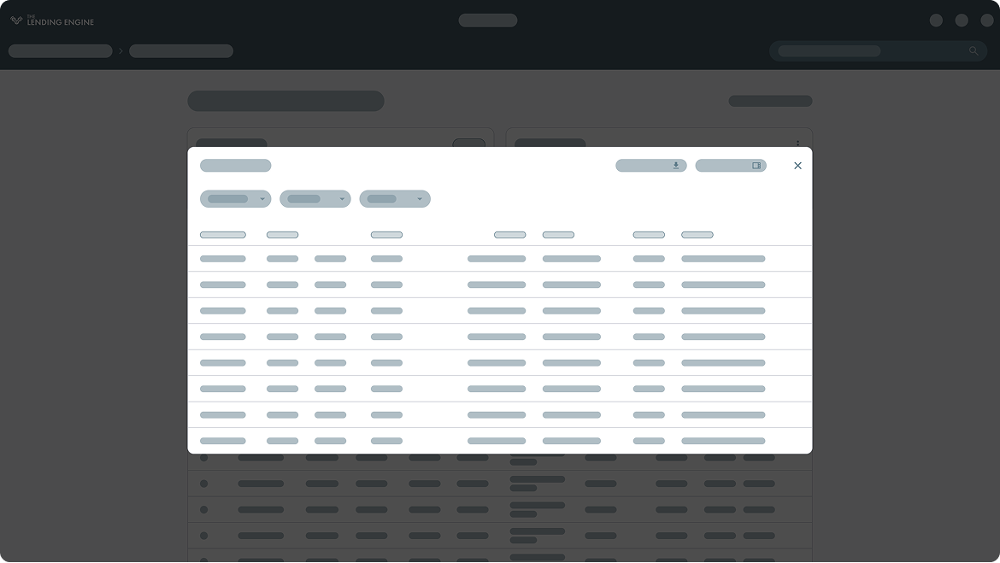
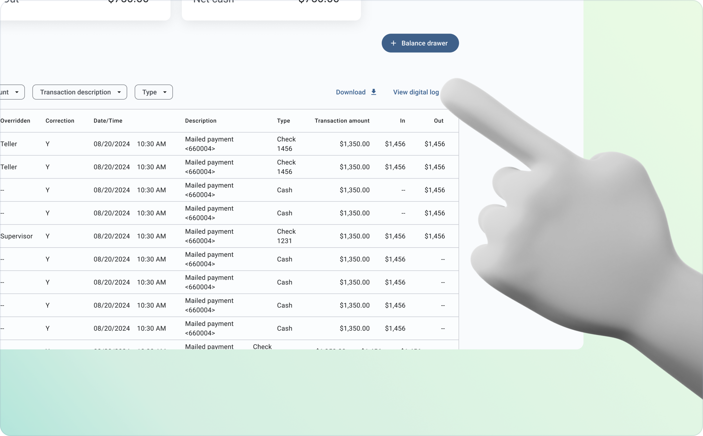
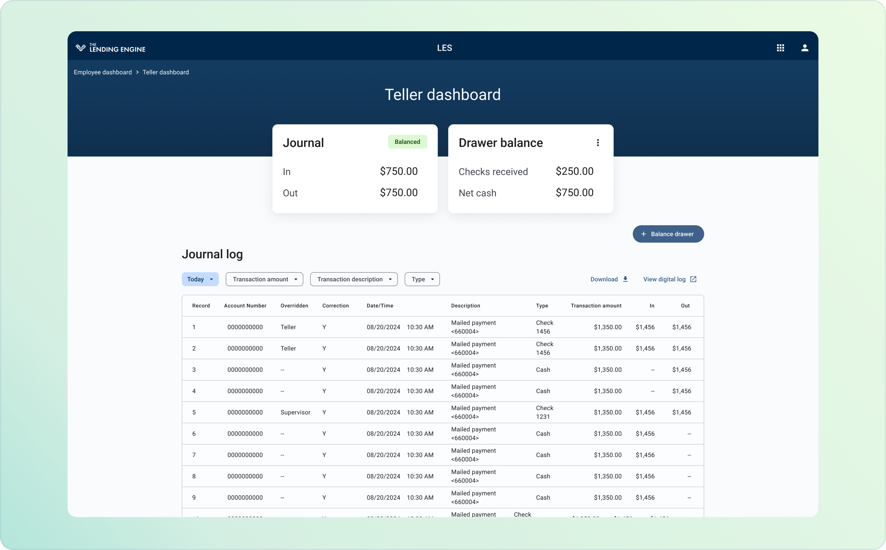
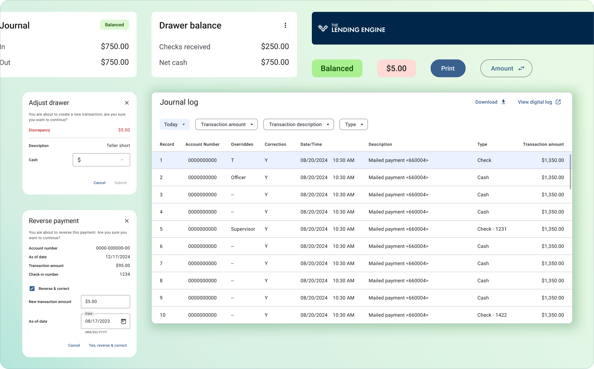

Key challenges
To validate our hypothesis, we conducted
interviews with 10 users
(Bank tellers, Administrative staff, and Account managers) to understand their challenges around the Teller Dashboard workflows and payment processes.
These interview revealed critical insights:
These interview revealed critical insights:
“There’s so much crammed onto the screen that I’ve definitely clicked the wrong button more than once. You have to double check everything.”
SC
Sarah C.
Senior loan officer
“It shouldn’t take this many steps to do a simple transfer. I know the workflow by heart, but it still eats up time.”
MR
Michael R.
Teller
“A customer will ask about a transaction from last week, and it takes forever to find it. The search tool just isn’t helpful.”
JP
Jennifer P.
Teller
Dashboard overload
70% of tellers reported feeling overwhelmed by the excessive amount of information displayed on the screen.
Time-consuming end-of-day reports
On average, tellers spent 15-20 minutes compiling their end-of-day reports due to the manual nature of the process.
Drawer balance uncertainty
60% of tellers mentioned that they often had to recount their drawers manually because the digital balance was unclear.
Slow transaction retrieval
Tellers needed a faster way to locate past transactions to assist customers efficiently.
Ideation & solution exploration
With our research insights in mind, we explored several design directions for improving the Teller Dashboard:
Task-specific screens
One idea was to create dedicated screens for each transaction type. While this reduced clutter, it required frequent context switching and slowed down multi-step workflows.
Tabbed navigation
We also considered a tabbed interface that separated key functions across different sections. This approach offered clearer organization but increased the number of clicks and made it harder for tellers to maintain a holistic view of the customer’s profile.
Single-screen consolidation
Ultimately, we pursued a single-screen interface that consolidated all loan management and teller tasks. This solution streamlined workflows, minimized context switching, and lowered cognitive load, while still allowing critical information to remain accessible.



User Testing & Iteration
Interactive prototypes were tested with tellers and GPS account managers to gather feedback and ensure it met tellers' needs. This included A/B testing to evaluate different layouts and navigation structures for optimal intuitiveness. These tests focused on task completion time, error rates, and overall user satisfaction.
Conclusion
These insights led to final refinements, including adding quick-access buttons for commonly used features and allowing customization of table columns.
“What used to take me 3–4 minutes now takes under 2. That really adds up during busy hours.”
JP
Jennifer P.
Teller
“The system doesn’t ask me for things it already knows, finally!”
MR
Michael R.
Teller
Impact & Results
45%
Faster End-of-Day Reports
30%
Reduction in Discrepancies
87%
Faster Transaction Search

